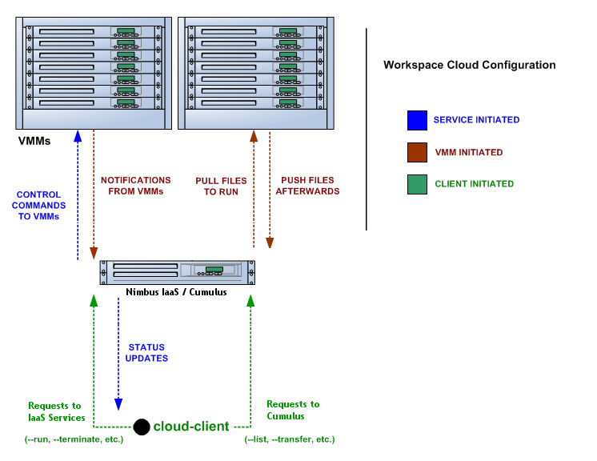

This section explains some side tasks as well as some none-default configurations.
The Nimbus conf files have many comments around each configuration. Check those out. Their content will be inlined here in the future.
See the $NIMBUS_HOME/services/etc/nimbus/workspace-service directory.
The cloud configuration is a particular configuration of Nimbus that allows the cloud-client to operate out of the box. It is what is set up when you are done with the Zero To Cloud Guide.
This overview section and subsequent reference sections give a more in-depth explanation of how it works in order to provide context for administrators running Nimbus in production that want to customize settings or understand things in a more "under the hood" way for security/networking reasons.
This is all information for deployers of the cloud configuration to learn about it and customize it. This is not necessary for cloud users to read and understand. If you are a cloud user just looking to understand how to launch and manage VMs on an existing cloud, start with the clouds pages.
In the Nimbus 2.6 release the repository service (Cumulus) and the IaaS services MUST be on the same node. In future releases this restriction will be lifted.
The server addresses must be directly reachable from the Internet or otherwise configured to deal with being NAT'd. The IaaS services container can be setup for NAT or other port forwarding situations. Cumulus should be NAT friendly so long as its listening port (default 8888) is forwarded through the NAT.

The diagram above depicts the basic setup.
Working backwards from the user's cloud-client experience is a good way to understand how the service needs to be setup.
Here is an abbreviated depiction of a simple user interaction with a cloud, to give you an idea if you've never used it. This does not depict an image transfer to the repository node but that is similarly brief.
A grid credential is needed, there is an embedded grid-proxy-init program if that is necessary.
You can list what's in your repository directory:
Sample output:
[Image] 'base-cluster-01.gz' Read only
Modified: Jul 06 @ 17:34 Size: 578818017 bytes (~552 MB)
[Image] 'hello-cloud' Read only
Modified: May 30 @ 14:16 Size: 524288000 bytes (~500 MB)
[Image] 'hello-cluster' Read only
Modified: Jun 30 @ 20:18 Size: 524288000 bytes (~500 MB)
And pick one to run (ignore the 'cluster' images for now)
Sample output:
SSH public keyfile contained tilde:
- '~/.ssh/id_rsa.pub' --> '/home/guest/.ssh/id_rsa.pub'
Launching workspace.
Using workspace factory endpoint:
https://cloudurl.edu:8443/wsrf/services/WorkspaceFactoryService
Creating workspace "vm-023"... done.
IP address: 123.123.123.123
Hostname: ahostname.cloudurl.edu
Start time: Fri Feb 29 09:36:39 CST 2008
Shutdown time: Fri Feb 29 10:36:39 CST 2008
Termination time: Fri Feb 29 10:46:39 CST 2008
Waiting for updates.
Some time elapses as the image file is copied to the VMM node. Then a running notification is printed:
State changed: Running Running: 'vm-023'
The client had picked up your default public SSH key and sent it to be installed on the fly into the VM's authorized_keys policy for the root account. So after launching you can use the printed hostname to log in as root:
You can see an example of a cluster cloud-client deployment on the one-click clusters page.
A number of things go into making the cloud client work out of the box, but it is in large part accomplished by giving the user a downloadable package with a number of default configurations.
These defaults limit functionality options in some cases, but that is the idea: eliminate decisions that need to be made and set working defaults. There are avenues left open for experienced users to do more (for example, by overriding the defaults or even switching over to the regular workspace client).
In the previous section, the first thing that probably stands out is that there are no contact addresses being entered on the command line.
The service and repository URLs are derived from a properties file that is included in the toplevel "conf" directory of the cloud-client package.
Note: How properties files and commandline overrides work is covered in a later section in detail, it is all designed to be flexible under the covers. If you don't want to follow the conventions laid out in this current "assumptions" section, it will be important to understand the later section to know how to change things for a good client package or properties file(s) that your users can use. Continue reading this section first, though, to get the basic ideas.
There are three main groups of assumptions and defaults. The first is the contact and identity information of the workspace service (see above for configuration sample where this are specified). The other two groups make up the rest of this "Assumptions" section:
For Cumulus S3 based commands (like --list, --delete, and --transfer) the server to contact is based on the contact in the cloud properties file. The s3id and s3 secret to authenticate with the Cumulus server is stored in the cloud properties file.
When you transfer a local file, the target of the transfer is the same filename in your personal repository directory. When you refer to the name of a workspace to run, this name must correspond to a filename in your personal repository directory.
We know where the repository comes from but how is that directory derived?
There are two other components to derive the directory used: the configured base bucket property and the user S3 ID.
There is a cloud-client option to input any name or local file path and see what the derived URL is. See the --extrahelp description of the --print-file-URL option.
The second set of assumptions to cover is how a given image file is going to actually work. There are many options that you can specify in regular workspace requests. For example, the memory size, the number of network interfaces to construct, the pool name(s) to lease network addresses from, and the partition name the VM is expecting for the base partition.
Some fixed assumptions are made:
The rest of the launch request is filled by default configurations, here they are:
The previous section summed up the defaults and main assumptions. Opting to follow these conventions in your cloud leads to these configuration conclusions:
Install the workspace service in resource pool mode.
Configure an network for addresses to lease from and call it "public".
Create a cloud.properties file for your cloud with the values in this example file changed to reflect the correct URLs and identities.
It is best to distribute a unique cloud.properties for each user with the Cumulus credentials in the file already, this is easily set up when using the nimbus-new-user program and the Nimbus web application. See the user management section for details.
If you need to adjust the default memory request, add a line of text like so to the cloud.properties file you will distribute: vws.memory.request=256
Create a Repo base bucket on the repository node. This should be done by the Nimbus installer.
This section goes into more detail about the property file and commandline configurations. This is especially important to understand if you want to diverge from the defaults above.
All commands go through cloud-client.sh which in turn invokes the actual cloud client program. The cloud client is written in Java and installed at lib/globus/lib/workspace_client.jar.
Before calling this program, the script sets up some things:
The cloud client program respects settings from three different places, listed here in the order of precedence:
Commandline arguments - If the client uses one of the optional flags listed in ./bin/cloud-client.sh --extrahelp, these values are used. Many things can be overriden this way, including the service contacts.
User properties file - An example of this is distributed with the cloud client.
Note that you can include different properties files and have your users switch between clouds using ./bin/cloud-client.sh --conf ./conf/some-file.
If no --conf argument is supplied, the default file cloud.properties needs to exist. If you need to change this in your client distribution for cosmetic reasons, you can do so by editing the one relevant line at the top of ./bin/cloud-client.sh
Embedded properties file - A properties file lives inside the workspace client jar (which is installed into lib/globus/lib/workspace_client.jar). This controls all the remaining configurations.
There are (intentionally) no fallback settings for many of the properties, they will be included in the cloud.properties file you give to a user:
These are the embedded properties that are shipped with the cloud client, they can also exist in the cloud properties files to override the defaults:
# Default ms between polls vws.poll.interval=2000 # Default client behavior is to poll, not use asynchronous notifications vws.usenotifications=false # Default memory request vws.memory.request=3584 # Image repository base directory (only used for older GridFTP based clouds) vws.repository.basedir=/cloud/ # CA hash of target cloud (only used for advice in --security) vws.cahash=6045a439 # propagation setup for cloud (only used for older GridFTP based clouds) vws.propagation.scheme=scp vws.propagation.keepport=false # Metadata defaults vws.metadata.association=public vws.metadata.mountAs=sda1 vws.metadata.nicName=eth0 vws.metadata.cpuType=x86 vws.metadata.vmmType=Xen vws.metadata.vmmVersion=3 # Filename defaults for history directory vws.metadata.fileName=metadata.xml vws.depreq.fileName=deprequest.xml
In order to manage Nimbus user more easily a set of command line tools have been created.
All of the tools take as a single mandatory argument an email address, with the slight exception of nimbus-list-users. nimbus-list-users allows an administrator to query for users on their systems therefore it takes as an argument a query pattern. For example, if you wanted to look up all the users with email addresses at gmail.com you would run:
$ nimbus-list-users %@gmail.com
All of the command line tools take the argument --help and further information can be found there. For didactic purposes an example of a common session in which a new user is created, changes, listed and removed follows:
$ ./bin/nimbus-new-user user1@nimbus.test cert : /home/bresnaha/NIM/var/ca/tmpm3s0Vccert/usercert.pem key : /home/bresnaha/NIM/var/ca/tmpm3s0Vccert/userkey.pem dn : /O=Auto/OU=a645a24d-6183-4bbd-9537-b7260749c716/CN=user1@nimbus.test canonical id : aa55655a-8552-11df-a58d-001de0a80259 access id : p3BR1WQTpio8JShc8YD7S access secret : LRY6lMgIFE5BioK5XRu7eZKecBDHjB35PVOqAmCLDm url : None web id : None cloud properties : /home/bresnaha/NIM/var/ca/tmpm3s0Vccert/cloud.properties $ $ ./bin/nimbus-edit-user -p NewPassWord user1@nimbus.test dn : /O=Auto/OU=a645a24d-6183-4bbd-9537-b7260749c716/CN=user1@nimbus.test canonical id : aa55655a-8552-11df-a58d-001de0a80259 access id : p3BR1WQTpio8JShc8YD7S access secret : NewPassWord $ $ ./bin/nimbus-list-users %@nimbus.test dn : /O=Auto/OU=a645a24d-6183-4bbd-9537-b7260749c716/CN=user1@nimbus.test canonical id : aa55655a-8552-11df-a58d-001de0a80259 access id : p3BR1WQTpio8JShc8YD7S access secret : NewPassWord display name : user1@nimbus.test $ $ ./bin/nimbus-remove-user user1@nimbus.test $
In the services/etc/nimbus/workspace-service/group-authz/ directory are the default policies for each user. You pick a pre-configured policy to apply to a new user. The "groups" are not a shared allocation but rather each group is a policy that describes a "type" of user.
Todo: describe what can be tracked on a per-user basis
Todo: speak of nimbus-new-user integration
After installing, the EC2 query frontend should be immediately operational. However if you wish you use the SOAP frontend as well, you must make a few configuration changes. To begin, see the $NIMBUS_HOME/services/etc/nimbus/elastic directory. The elastic.conf file here specifies what the EC2 "instance type" allocations should translate to and what networks should be requested from the underlying workspace service when VM create requests are sent.
By default, a Nimbus installation will enable this service:
https://10.20.0.1:8443/wsrf/services/ElasticNimbusService
But before the service will work, you must adjust a container configuration. This will account for some security related customs for EC2:
Secure message is used, but only on the request. No secure message envelope is sent around EC2 responses, therefore EC2 clients do not expect such a response. It relies on the fact that https is being used to protect responses.
Both integrity and encryption problems are relevant, be wary of any http endpoint being used with this protocol. For example, you probably want to make sure that add-keypair private key responses are encrypted (!).
Also, adjusting the container configuration gets around a timestamp format incompatibility we discovered (the timestamp is normalized after the message envelope signature/integrity is confirmed).
There is a sample container server-config.wsdd configuration to compare against here.
Edit the container deployment configuration:
_EXAMPLE_CMD_BEGIN nano -w etc/globus_wsrf_core/server-config.wsdd _EXAMPLE_CMD_ENDFind the <requestFlow> section and comment out the existing WSSecurityHandler and add this new one:
<handler type="java:org.globus.wsrf.handlers.JAXRPCHandler">
<!-- enabled: -->
<parameter name="className"
value="org.nimbustools.messaging.gt4_0_elastic.rpc.WSSecurityHandler" />
<!-- disabled: -->
<!--<parameter name="className"
value="org.globus.wsrf.impl.security.authentication.wssec.WSSecurityHandler"/> -->
</handler>
Now find the <responseFlow> section and comment out the existing X509SignHandler and add this new one:
<handler type="java:org.apache.axis.handlers.JAXRPCHandler">
<!-- enabled: -->
<parameter name="className"
value="org.nimbustools.messaging.gt4_0_elastic.rpc.SignHandler" />
<!-- disabled: -->
<!--<parameter name="className"
value="org.globus.wsrf.impl.security.authentication.securemsg.X509SignHandler"/>-->
</handler>If you don't make this configuration, you will see this error when trying to use an EC2 client.
Container restart required after the configuration change.
KVM
If you are using KVM you need to adjust the default mountpoint, to support disk images. This is found in $NIMBUS_HOME/services/etc/nimbus/elastic/other/other-elastic.conf. Set rootfile.mountas=hdaThe EC2 Query frontend supports the same operations as the SOAP frontend. However, it does not run in the same container. It listens on HTTPS using Jetty. Starting with Nimbus 2.4, the query frontend is enabled and listens on port 8444. For instructions on changing this port, see the service ports section.
Configuration for the query frontend lives in the $NIMBUS_HOME/services/etc/nimbus/query/query.conf file.
The Query interface does not rely on X509 certificates for security. Instead, it uses a symmetric signature-based approach. Each user is assigned an access identifier and secret key. These credentials are also maintained by the service. Each request is "signed" by the client by generating a hash of parts of the request and attaching them. The service performs this same signature process and compares its result with the one included in the request.
There is support for creating query credentials in the nimbus-new-user program, for more information see the user management section.
There is support for distributing query tokens via the Nimbus Web application.
The assorted Nimbus and Cumulus services use several network ports. Each is configured with sensible defaults, but you may change them if needed. Below are instructions for changing the port of each service.
Edit $NIMBUS_HOME/libexec/run-services.sh and change the PORT line to your desired port number. You must restart the service for changes to take effect.
Edit $NIMBUS_HOME/services/etc/nimbus/query/query.conf and adjust the https.port line. You must restart the service for changes to take effect.
The configuration options for Cumulus can be found in $NIMBUS_HOME/cumulus/etc/cumulus.ini. Under the heading [cb] there is a port entry. Change that value and restart Cumulus with the nimbusctl program.
[cb] installdir = <nimbus home> port = 8888 hostname = <hostname>
note: If this change is made after you have distributed a cloud.properties file to users then you will need to instruct your cloud-client users to change the value vws.repository=<hostname>:<port> in their local cloud.properties file.
The context broker also has a RESTful HTTP interface which listens on a separate port. You can disable or change the port of this interface in a configuration file: $NIMBUS_HOME/services/etc/nimbus-context-broker/jndi-config.xml. Parameters under the rest resource control this interface. Restart the service for changes to take effect.
When enabled, the web application listens by default on port 1443. This and other configuration options are location in the $NIMBUS_HOME/web/nimbusweb.conf file. Changes to this file require a restart of the service.
Starting with Nimbus 2.4, the Nimbus Web application is bundled with the service distribution but is disabled by default. To enable it, edit the $NIMBUS_HOME/nimbus-setup.conf file and change the value of web.enabled to True. Next you should run nimbus-configure to propagate the change. Now you can use nimbusctl to start/stop the web application.
Once the web application has been configured, you can start to use it with the nimbus-new-user program (see the help output), see the user management section.
The Nimbus web application provides basic facilities for distributing new X509 credentials, EC2 query tokens, and cloud.properties files to users.
Previously this was a tedious process that was difficult to do in a secure way that was also user friendly. Nimbus Web allows an admin to upload credentials for a user and then send them a custom URL which invites them to create an account.
Once the web application has been configured, you can start to use it with the nimbus-new-user program (see the help output, -W flag), which allows you to very quickly add a user to the system and get the URL to distribute in your welcome email. The user management tools provide machine parsable output options that make it easy to incorporate into scripts as well (perhaps you would like to go further and create those emails entirely programmatically).
To get started, log into the web interface as a superuser and go to the Administrative Panel. This page has a section for creating users as well as viewing pending and existing users. The best way to do this is by using the nimbus-new-user tool, but this option is available for you to create accounts manually.
If you go the manual route: fill in the appropriate fields and upload an X509 certificate and (passwordless) key for the user. Note that the application expects plain text files, so depending on your browser you may need to rename files to have a .txt extension before you can upload them. Once the new account is created, you will be provided with a custom URL. You must paste this URL into an email to the user along with usage instructions.
When the user accesses the custom URL, they will be asked to create a password and login. Inside their account, they can download the certificate and key which were provided for them by the admin. Note that the design of the application attempts to maximize the security of the process, with several important features:
The Nimbus installer creates a Certificate Authority which is used for (among other things) generating a host certificate for the various services. There are three files involved in your host certificate and they are all generated during the install by the nimbus-configure program. By default, these files are placed in "$NIMBUS_HOME/var/" but you can control their placement with properties in the "$NIMBUS_HOME/nimbus-setup.conf" file.
To use a custom host certificate, you can delete (or relocate) these three files, copy in your own hostcert.pem and hostkey.pem, and run nimbus-configure, which will generate the keystore.
CA Certs
It is important that the issuing CA cert is trusted by Nimbus (and any clients used to access the Nimbus services). This is done by placing the hashed form of the CA files in the trusted-certs directory, by default "$NIMBUS_HOME/var/ca/trusted-certs/". For example, these three files:Cumulus https
NOTE: If you are using Cumulus with https you will need to point it at the correct certificates as well. This is further explained here.3fc18087.0 3fc18087.r0 3fc18087.signing_policy
If you simply want to generate new host certificates using the Nimbus internal CA (perhaps using a different hostname), you can follow a similar procedure. Delete or relocate the hostcert.pem, hostkey.pem, and keystore.jks files and then run nimbus-configure. New files will be generated.
You can also keep these files outside of the Nimbus install (for example if you use the same host certificate for multiple services on the same machine. Just edit the $NIMBUS_HOME/nimbus-setup.conf file and adjust the hostcert, hostkey, and keystore properties. Then run nimbus-configure. If these files do not exist, they will be created.
What follows is the instructions for setting up a container as they existed before the auto-configuration program or the installer came into being (see here for information about the auto-configuration program). We are leaving in the docs because it provides some insight, especially for administrators that are preparing programmatic node configurations for their clusters (using systems such as Chef).
Navigate to the workspace-service configuration directory:
_EXAMPLE_CMD_BEGIN cd $NIMBUS_HOME/services/etc/nimbus/workspace-service _EXAMPLE_CMD_ENDEdit the "ssh.conf" file:
_EXAMPLE_CMD_BEGIN nano -w ssh.conf _EXAMPLE_CMD_ENDFind this setting:
service.sshd.contact.string=REPLACE_WITH_SERVICE_NODE_HOSTNAME:22
... and replace the CAPS part with your service node hostname. This hostname and port should be accessible from the VMM nodes.
(The guide assumes you will have the same privileged account name on the service node and VMM nodes, but if not, this is where you would make the changes as you can read in the ssh.conf file comments).
See the resource pool section to learn how to add VMM names.
Navigate to the workspace service networks directory:
_EXAMPLE_CMD_BEGIN cd $NIMBUS_HOME/services/etc/nimbus/workspace-service/network-pools/ _EXAMPLE_CMD_ENDThe service is packaged with two sample network files, public and private.
You can name these files anything you want. The file names will be the names of the networks that are offered to clients. It's a convention to provide "public" and "private" but these can be anything. If you do change this, the cloud client configuration for what network(s) to request will need to be overriden in the cloud.properties file that you distribute to users.
The public file has some comments in it. Edit this file to have the one DNS line at the top and one network address to give out. The subnet and network you choose should be something the VMM node can bridge to (there are some advanced configs to be able to do DHCP and bridge addresses for addresses that are foreign to the VMM, but this is not something addressed in this guide).
_EXAMPLE_CMD_BEGIN nano -w public _EXAMPLE_CMD_END192.168.0.1 fakepub1 192.168.0.3 192.168.0.1 192.168.0.255 255.255.255.0
It is possible to force specific MAC addresses for each IP address, see the file for syntax details. Usually the service will pick these for you from a pool of MAC addresses starting with a prefix that is configured in the "$NIMBUS_HOME/services/etc/nimbus/workspace-service/network.conf" file.
There are modules for two resource management strategies currently distributed with Nimbus: the default "resource pool" mode and the "pilot" mode.
The "resource pool" mode is where the service has direct control of a pool of VMM nodes. The service assumes it can start VMs
These are explained below. To learn about backfill and spot instances, see backfill and spot instances overview
The "pilot" mode is where the service makes a request to a cluster's Local Resource Management System (LRMS) such as PBS. The VMMs are equipped to run regular jobs in domain 0. But if pilot jobs are submitted, the nodes are secured for VM management for a certain time period by the workspace service. If the LRM or administrator preempts/kills the pilot job earlier than expected, the VMM is no longer available to the workspace service.
The "services/etc/nimbus/workspace-service/other/resource-locator-ACTIVE.xml" file dictates what mode is in use (container restart required if this changes). See the available "services/etc/nimbus/workspace-service/other/resource-locator-*" files.
This is the default, see the overview.
In the Zero to Cloud Guide, the configuration script that you interacted with at end of the SSH Setup section took care of configuring the workspace service with the first VMM to use.
A cloud with one VMM is perfectly reasonable for a test setup, but when it comes time to offer resources to others for real use, we bet you might want to add a few more. Maybe a few hundred more.
As of Nimbus 2.6, it is possible to configure the running service dynamically. You can interact with the scheduler and add and remove nodes on the fly. The nimbus-nodes program is what you use to do this.
Have a look at the help output:
cd $NIMBUS_HOME ./bin/nimbus-nodes -h
The following example assumes you have homogenous nodes. Each node has, let's say, 8GB RAM and you want to dedicate the nodes exclusively to hosting VMs. Some RAM needs to be saved for the system (in Xen for example this is "domain 0" memory), so we decide to offer 7.5GB to VMs. For RAM, there is no overcommit possible with Nimbus.
nimbus-nodes needs a running service
If the service is not running, the nimbus-nodes program will fail to adjust anything. Make sure the workspace service is running with "./bin/nimbusctl start".You can SSH to each node without password from the nimbus account, right?
service-node $ whoami nimbus service-node $ ssh nequals01
nequals01 $ ...
The nodes in the cluster are named based on numbers, so for example "nequals01", "nequals02", etc. This means we can construct the command with a for loop.
$ NODES="nequals01" $ for n in `seq -w 2 10`; do NODES="$NODES,nequals$n"; done $ echo $NODES nequals01,nequals02,nequals03,nequals04,nequals05,nequals06,nequals07,nequals08,nequals09,nequals10
With the $NODES variable in hand, we can make the node-addition call.
$ ./bin/nimbus-nodes --add $NODES --memory 7680
At any time you can use the "--list" action to see what the current state of the pool is.
There are several other options discussed in the nimbus-nodes -h text, we will highlight a few of the most important ones here.
If you ever want to disable a VMM, use the live-update feature. After running the following command, no new VMs can be launched on the node. Any current VMs, however, will continue running. So this is a way to "drain" your nodes of work if there is maintenance coming up, etc.
$ ./bin/nimbus-nodes --update nequals08 --inactive
Nimbus also lets you divide your nodes into multiple resource pools. This can be used to provide multiple sets of resources to your users. For example, you could divide heterogeneous resources into different resource pools, for example by processor manufacturer. For example:
$ ./bin/nimbus-nodes -a amdnode01 -m 4096 -p amd $ ./bin/nimbus-nodes -a intelnode01 -m 4096 -p intel
The first step to switching to the pilot based infrastructure is to make sure you have at least one working node configured with workspace-control, following the instructions in this guide as if you were not going to use dynamically allocated VMMs via the pilot.
If the only nodes available are in the LRM pool, it would be best to drain the jobs from one and take it offline while you confirm the setup.
Next, make sure that the system account the container is running in can submit jobs to the LRM. For example, run echo "/bin/true" | qsub
Next, decide how you would like to organize the cluster nodes, such that the request for time on the nodes from the workspace service in fact makes it end up with usable VMM nodes.
For example, if there are only a portion of nodes configured with Xen and workspace-control, you can set up a special node property (e.g. 'xen') or perhaps a septe queue or server. The service supports submitting jobs with node property requirements and also supports the full Torque/PBS '[queue][@server]' destination syntax if desired.
Copy the "services/etc/nimbus/workspace-service/other/resource-locator-pilot.xml" to "services/etc/nimbus/workspace-service/other/resource-locator-ACTIVE.xml"
The configuration comments in "services/etc/nimbus/workspace-service/pilot.conf" should be self explanatory. There are a few to highlight here (and note that advanced configs are in resource-locator-ACTIVE.xml).
HTTP digest access authentication based notifications is a mechanism for pilot notifications. Each message from a pilot process to the workspace service takes on the order of 10ms on our current testbed which is reasonable.
The contactPort setting is used to control what port the embedded HTTP server listens on. It is also the contact URL passed to the pilot program, an easy way to get this right is to use an IP address rather than a hostname.
Note the accountsPath setting. Navigate to that file ("services/etc/nimbus/workspace_service/pilot-authz.conf" by default) and change the shared secret to something not dictionary based and 15 or more characters. A script in that directory will produce suggestions.
This port may be blocked off entirely from WAN access via firewall if desired, only the pilot programs need to connect to it. If it is not blocked off, the use of HTTP digest access authentication for connections is still guarding access.
Alternatively, you can configure only SSH for these notifications as well as configure both and use SSH as a fallback mechanism. When used as a fallback mechanism, the pilot will try to contact the HTTP server and if that fails will then attempt to use SSH. Those message are written to a file and will be read when the workspace service recovers. This is an advanced configuration, setting up the infrastructure without this configured is recommended for the first pass (reduce your misconfiguration chances).
The maxMB setting is used to set a hard maximum memory allotment across all workspace requests (no matter what the authorization layers allow). This a "fail fast" setting, making sure dubious requests are not sent to the LRM.
To arrive at that number, you must arrive at the maximum amount of memory to give domain 0 in non-hosting mode. This should be as much as possible and you will also configure this later into the pilot program settings (the pilot will make sure domain 0 gets this memory back when returning the node from hosting mode to normal job mode).
When the node boots and xend is first run, you should configure things such that domain 0 is already at this memory setting. This way, it will be ready to give jobs as many resources as possible from its initial boot state.
Domain 0's memory is set in the boot pmeters. On the "kernel" line you can add a parameter like this: dom0_mem=2007M
If it is too high you will make the node unbootable, 2007M is an example from a 2048M node and was arrived at experimentally. We are working on ways to automatically figure out the highest number this can be without causing boot issues.
Take this setting and subtract at least 128M from it, allocating the rest for guest workspaces. Let's label 128M in this example as dom0-min and 2007 as dom0-max. Some memory is necessary for domain 0 to at least do privileged disk and net I/O for guest domains.
These two memory setting will be configured into the pilot to make sure domain 0 is always in the correct state. Domain 0's memory will never be set below the dom0-min setting and will always be returned to the dom0-max when the pilot program vacates the node.
Instead of letting the workspace request fail on the backend just before instantiation, the maxMB setting is configured in the service so b requests for more memory will be rejected up front.
So [ dom0-max minus dom0-min equals maxMB ]. And again maxMB is the maximum allowed for guest workspaces.
( You could make it smaller. But it would not make sense to make it bigger than [ dom0-max minus dom0-min ] because this will cause the pilot program itself to reject the request. )
The pilotPath setting must be gotten right and double checked. See this bugzilla item
Next, note your pilotPath setting and put a copy of workspacepilot.py there. Run chmod +x on it and that is all that should be necessary for the installation.
Python 2.3 or higher (though not Python 3.x) is also required but this was required for workspace-control as well.
A sudo rule to the xm program is also required but this was configured when you set up workspace-control. If the account the pilot jobs are run under is different than the account that runs workspace-control, copy the xm sudo rule for the account.
Open the workspacepilot.py file in an editor. These things must be configured correctly and require your intervention (i.e., the software cannot guess at them):
The other configurations should be explained enough in the comments and they also usually do not need to be altered.
You might like to create a directory for the pilot's logfiles instead of the default setting of "/tmp" for the "logfiledir" configuration. You might also wish to septe out the config file from the program. The easiest way to do that is to configure the service to call a shell script instead of workspacepiloy.py. This in turn could wrap the call to the pilot program, for example: "/opt/workspacepilot.py -p /etc/workspace-pilot.conf $@"
While addresses for VMs are configured and chosen within the Nimbus service, they are physically queried via an external DHCPd service. There are two ways of arranging the DHCP configuration.
Because Nimbus chooses the MAC address, it controls which DHCP entry will be retrieved by the VM. Additionally, ebtables rules are configured to ensure that a malicious or misconfigured VM cannot use another MAC or IP.
In a local DHCP scenario, workspace-control on each VMM manages the DHCP configuration file and injects entries just before each VM boots. To prevent DHCP broadcast requests from getting out to the LAN, an ebtables rule is enacted to force packets to a specific local interface.
Configuring local DHCP is not difficult, but you should exercise caution to ensure that the DHCP daemons on each VMM do not interfere with other networks. First of all, you must install an ISC-compatible DHCP server. This should be available on all Linux distributions.
Once installed, find the DHCP configuration location. Typically this is something like /etc/dhcp/dhcpd.conf or /etc/dhcp3/dhcpd.conf. Replace this file with the example in the workspace-control package: share/workspace-control/dhcp.conf.example and then edit it to include proper subnet declarations for your network. Afterwards, try restarting DHCP and checking logs to ensure that it started without error.
Next, edit the networks.conf file in etc/workspace-control/. Set the localdhcp option to true and take a look at the dhcp-bridges section to configure where DHCP packets are bridged to.
Finally, you may need to edit the sudo script that workspace-control uses to alter dhcp.conf and restart the service. This script is located at libexec/workspace-control/dhcp-config.sh. It expects the following defaults:
# Policy file for script to adjust DHCPD_CONF="/etc/dhcpd.conf" # Command to run before policy adjustment DHCPD_STOP="/etc/init.d/dhcpd stop" # Command to run after policy adjustment DHCPD_START="/etc/init.d/dhcpd start"
You should also ensure that this script can be called via sudo as the nimbus user.
The context broker is used to facilitate one click clusters.
The context broker is installed and configured automatically starting with Nimbus 2.4, but there is not a dependency on any Nimbus service component. It can run by itself in a GT container. You can use it for deploying virtual clusters on EC2 for example without any other Nimbus service running (the cloud client #11 has an "ec2script" option that will allow you to do this).
If you want to install the broker separately from Nimbus, download the Nimbus source tarball, extract it, and run scripts/gt/broker-build-and-install.sh with an appropriate $GLOBUS_LOCATION set.
To set up a standalone broker that is compatible with post-010 cloud clients, follow these steps:
Create a passwordless CA certificate.
You can do this from an existing CA. To unencrypt an RSA key, run: openssl rsa -in cakey.pem -out cakey-unencrypted.pem
Alternatively, you can use the CA created by the Nimbus installer under $NIMBUS_HOME/var/ca
Make very sure that the CA certificate and key files are read-only and private to the container running account.
Add the CA certificate to your container's trusted certificates directory. The context broker (running in the container) creates short term credentials on the fly for the VMs. The VMs use this to contact the broker: the container needs to be able to verify who is calling.
Navigate to "$NIMBUS_HOME/services/etc/nimbus-context-broker" and adjust the "caCertPath" and "caKeyPath" parameters in the "jndi-config.xml" file to point to the CA certificate and key files you created in previous steps.
Note that the old and new context brokers can both use the same CA certificate and key file.
Container restart is required.
Cumulus is the S3 compliant repository management service for Nimbus.
Cumulus is an open source implementation of the Amazon S3 REST API. It is packaged with the Nimbus however it can be used without nimbus as well. Cumulus allows you to server files to users via a known and adopted REST API. Your clients will be able to access your data service with the Amazon S3 clients they already use.
When the Cumulus server is run it expects to find a configuration file (typically called cumulus.ini) in one or all of the following locations:
cumulus.ini in Nimbus
For Nimbus installations this file can be found at $NIMBUS_HOME/cumulus/etc/cumulus.iniEach file in the path is read in (provided it exists). The values found in each file override the values found in the previous file in this list.
The backend storage system in Cumulus has been created with a modular interface that will allow us to add more sophisticated plugins in the future. Thus giving the administrator many powerful options. In the current implementation there is a single storage module which stores user files a mounted file system. The reliability and performance of Cumulus will thus be limited by the reliability and performance of that file system. Because of this Cumulus administrators will often want to specify a location for the repository.
Within the cumulus.ini file there is the [posix]:directory directive. This is the directory in which all of the files in the Cumulus repository will be stored. The names of the files in that directory will be obfuscated based on the bucket/key name. In order to discover what file belongs to what bucket/key you must use the user management tools (included with the Cumulus installation) There are a series of tools under the bin directory which start with nimbusauthz-* that can help with this. In most cases there will be no need for a system administrator to use these tools and they are provided for expert usage for problematic situations.
To use boto it is important to disable virtual host based buckets and to point the client at the right server. here is example code that will instantiate a boto S3Connection for use with CB:
cf = OrdinaryCallingFormat()
hostname = "somehost.com"
conn = S3Connection(id, pw, host=hostname, port=80, is_secure=False, calling_format=cf)
Once you have the s3cmd successfully installed and configured you must modify the file: $HOME/.s3cfg in order to direct it at this server. Make sure the following key value pairs reflect the following changes:
access_key = <access id>
secret_key = <access secret>
host_base = <hostname of service>
host_bucket = <hostname of server>
use_https = False
In order to use a secure https connection with cumulus you must edit the cumulus.ini file and provide it with a certificate and key pair. In a typical nimbus installation these are generated for you and placed at: $NIMBUS_HOME/var/hostcert.pem $NIMBUS_HOME/var/hostkey.pem To add them to the cumulus.ini file add the following lines:
[https] enabled=True key=/home/nimbus/var/hostkey.pem cert=/home/nimbus/var/hostcert.pem
Cumulus allows administrators to set disk space limits on a per user basis. By default users are created with unlimited space. To set a disk quota limit use the program NIMBUS_HOME/ve/bin/cumulus-quota Here is an example that will set the user user1@nimbusproject.org to a 100 byte limit:
$ ./ve/bin/cumulus-quota user1@nimbusproject.org 100 $ ./ve/bin/cumulus-list-users user1@nimbusproject.org friendly : user1@nimbusproject.org ID : Ar2yXcfdhImjMNeWGUHJZ password : ddOWFSC5rol9L6Tk14hA0QeS7valQdy38xeVvkFZwq quota : 100 canonical id : 21161ebe-862a-11df-a9ca-001de0a80259
There are a few variables that Nimbus relies on to find information about its co-located Cumulus server. These variables are found in the file: ./services/etc/nimbus/workspace-service/cumulus.conf. They are normally written automatically by the nimbus-configure program but if an administrator makes some manual changes to their Nimbus installation some of these variables may been to be changed as well.
LANTorrent is fast multicast file distribution protocol designed to saturate all the links in a switch. There are several optimizations planned for future releases of LANTorrent.
LANTorrent works best for the following scenarios:
When an endpoint wants a file it submits a request to a central agent. This agent aggregates request for files so that they can be sent out in an efficient single multi-cast session. Each request for a source file is stored until either N request on that file have been made or N' seconds have passed since the last request on that source file has been made. This allows for a user to request a single file in several unrelated session yet still have the file transfered in an efficient multi-cast session.
Once N requests for a given source file have been made or N' seconds have passed the destination set for the source file is determined. A chain of destination endpoints is formed such that each node receives from and sends to one other node. The first node receives from the repository and send to a peer node, that peer node sends to another, and so on until all receive the file. In this way all links of the switch are utilized to send directly to another endpoint in the switch. This results in the most efficient transfer on a LAN switched network.
Often times in a IaaS system a single network endpoint (VMM) will want multiple copies of the same file. Each file is booted as a virtual machine and that virtual machine will make distinct changes to that file as it runs, thus it needs it own copy of the file. However that file does not need to be transfered across the network more than once. LANTorrent will send the file to each endpoint once and instruct that endpoint to write it to multiple files if needed.
LANTorrent is not enabled in a default Nimbus installation. A few additional steps are required to enable it.
The following software is required on both service and VMM nodes:
Lantorrent is run out of xinetd thus it must also be installed on all VMMs.
To install LANTorrent you must take the following steps:
Edit $NIMBUS_HOME/nimbus-setup.conf and enable LANTorrent:
lantorrent.enabled: True
Edit $NIMBUS_HOME/services/etc/nimbus/workspace-service/other/common.conf and change the value of propagate.extraargs:
propagate.extraargs=$NIMBUS_HOME/lantorrent/bin/lt-request.sh
Be sure to expand $NIMBUS_HOME to its full and actual path.
Install LANTorrent on VMM
Install LANTorrent into xinetd
The setup-vmm.py script outputs the need xinetd lantorrent file. For example:
============== START WITH THE NEXT LINE ==================
service lantorrent
{
type = UNLISTED
disable = no
socket_type = stream
protocol = tcp
user = bresnaha
wait = no
port = 2893
server = /home/bresnaha/lt1/bin/ltserver
}
=============== END WITH THE PREVIOUS LINE =================
This output must be copied into /etc/xinetd.d/lantorrent. Once done,
restart xinetd.
# /etc/init.d/xinetd restart
Change the propagation method.
Edit the file: $NIMBUS_HOME/services/etc/nimbus/workspace-service/other/authz-callout-ACTIVE.xml and change:
<property name="repoScheme" value="scp" />to:
<property name="repoScheme" value="lantorrent" />
$ $NIMBUS_HOME/bin/nimbusctl restart
[optional] If the path to nimbus on the workspace-control nodes (VMMs) is not /opt/nimbus you will also need to edit a configuration file on all backend nodes.
In the file: <workspace-control path>/etc/workspace-control/propagation.conf Adjust the value of:
lantorrentexe: /opt/nimbus/bin/ltclient.sh
to point to the proper location of your ltclient.sh script. This should be a simple matter of changing /opt/nimbus to the path where you chose to install workspace control.
Backfill and Spot Instances are two related features, they both deal with asynchronous instance requests, requests that may only be started at appropriate times, if ever.
Spot instances are requested by remote users with a particular bid (represented in Nimbus as a discount applied to minutes charged to your account). Users may consult the spot price history before bidding. If the bid is accepted (equal or higher to the current spot price), the instances are started. They may be stopped at a moment's notice. The implementation is of EC2's 2010-08-31 WSDL, see the Amazon EC2 Spot Instances guide for more background.
Backfill is a mechanism that the administrator configures to keep idle resources busy. You pick a particular VM image that will be launched when the nodes would otherwise be idle. This works nicely with systems such as Condor that can gracefully deal with being preempted.
To jump to the precise semantics and configurations that are possible, see the comments in the async.conf file.
To start using spot instances as a user, follow the spot instance user's guide.
To begin with backfill, read over the above conf file first. Choose a current administrator account to launch the image from or create one with the "--dn" flag like so:
... where "BACKFILL-SUPERUSER" is the user configured in async.conf (that is the default value).
Backfill responds immediately to changes in the resource pool like the presence of higher priority requests (which includes spot instances if they are configured, as well as regular requests of course). This also includes when the resource pool is fundamentally changed by the nimbus-nodes program. When you add and remove nodes, you are changing the overall capacity which is a critical piece of information for mapping asynchronous requests like backfill and spot instances.
A ramifications of that is that, since adding nodes is always done when the service is running, having backfill enabled while you make adjustments might get in your way during this period. It can be easier to disable backfill, make node adjustments, and then re-enable backfill. This applies especially to removing nodes since the nimbus-nodes program does not allow nodes to be removed that have instances running on them.
This could be said for spot instances as well. It is slightly trickier with spot instances because they are remote user requests and you may not want to disable things abruptly for people. But on the other hand, they are spot instances so they should be able to deal with sudden terminations.
Another thing to watch out for is using the "max.instances=0" configuration. Zero means as many as possible, but this maximum number is only calculated at service startup time. So if you add a bunch of new nodes to the resource pool and the backfill instances do not immediately start consuming them greedily, this is what is happening. After adding all those nodes, stop and then start the service and the backfill configuration will recalibrate.
libvirt template and virtioThe submission of VMs to the hypervisor (with Xen or KVM) is done by Nimbus via libvirt. Then submitting to libvirt the VM run request is described in an xml file. This file has many potential customizations depending on the feature set supported by a particular VMM. Many of the values are dynamically determined by Nimbus, however a site admin may want to add their own custom optimizations.
The xml used for every VM submission is generated from a template found in the workspace control installation at: /etc/workspace-control/libvirt_template.xml Admins can add site specific optimizations (like virtio) to this template.
Copy propagation is a very simple mechanism for getting a virtual machine image out of Cumulus and coping it to the VMM for use as a VM instance. To use this mechanism all VMMs must have shared disk space with the Cumulus repository. In situations where users have a file system shared among all nodes in the Nimbus setup boot times can be significantly reduced with the cp propagation driver.
In order to enable copy propagation you must edit the file $NIMBUS_HOME/services/etc/nimbus/workspace-service/other/authz-callout-ACTIVE.xml and change:
<property name="repoScheme" value="scp" />to:
<property name="repoScheme" value="cp" />
It is possible to use copy propagation as a pass through propagation adapter. This means that instead of only being able to boot files in the Cumulus repository an administrator can allow users to specify any file on the file system to which the VMM node's nimbus user has access.
WARNING: This should NOT be enabled in most cases due to security
implications.
When using the copy propagation pass through adapter the Cumulus security
ACL authz protection is entirely bypassed. A user can boot and copy
any image that the nimbus user can read. This should be used with
extreme care and only on cloud with nothing but completely trusted users.
Image propagation is the process of sending a VM image from the Cumulus repository to the VMM which boots that image for the user. This can be a time consuming part of the boot process. Often times the same image is booted multiple times on the same VMM. In order to prevent that image from having to be repeatedly propagated we introduced an image cache to the workspace control software.
When a user uploads an image to the Cumulus repository its md5 sum is calculated and kept as metadata with that image. Then when a user launches that VM image, first its md5 sum is sent to the selected VMM. That VMM checks its cache to see if it has a matching image. If a match is found the cached image is used. If not the image is propagated to that VMM and added to its cache keyed by its md5 sum.
Each VMM that will have a cache enabled must alter this file: /opt/nimbus/etc/workspace-control/images.conf. Search for the two values cachedir: cache_size: cachedir is the path to the image cache and cache_size is the maximum size of the cache. When these values are enabled the cache will be in effect.
The Nimbus administration tools, nimbus-admin and nimbus-nodes, allow administrators to configure VMMs and monitor the VMs running on them. The nimbus-nodes tool is used for configuring the VMM nodes available to the service. It allows you to list, add, update and remove nodes on the service. The nimbus-admin tool allows you to monitor and shut down the virtual machines running on the service.
The nimbus-admin tool, is in the $NIMBUS_HOME/bin directory. You can view the nimbus-admin help with:
$ nimbus-admin --help
List:
The --list command will display a list of virtual machines with the
following information:
id: the VM id number
node: the physical VMM node the VM is running on
group_id: the group id number associated with the VM
group_name: the group name associated with the VM
creator: The Distinguished Name of the user who started this VM
state: Current state of the VM (Running, Propagated, etc)
start time: Time when the VM was created
end time: Time when the VM's lease expires
memory: Amount of memory being used by this VM
cpu count: Number of cpu cores being used by this VM
uri: Image and repository information of this VM
The following options can be used to filter which VMs are listed:
--user (-u) filter VMs by user display name
--dn (-d) filter VMs by user DN name
--gid (-g) filter VMs by group id
--gname (-gn) filter VMs by group name
--host (-hn) filter VMs running on a particular VMM host
As an example, let's list by host:
$ ./nimbus-admin --list --host worker02.example.org id : 4 node : worker02.example.org group_id : 1 group_name : UNLIMITED creator : /O=Auto/OU=0718075a-873f-4eef-b0b3-d10a975e8c7d/CN=test@example.org state : Running start time : Tue Sep 13 09:55:30 PDT 2011 end time : Tue Sep 13 18:17:30 PDT 2011 memory : 512 cpu count : 1 uri : /vms/sl54base_i386.img.gz
Shutdown:
The --shutdown command destroys specified virtual machines.
When shutting down a VM, a soft shutdown is called first, which puts
the VM in "propagated" mode. Once the VM is propagated, it is then
fully destroyed. You can specify which VMs to shutdown in the following ways:
--all (-a) shutdown all running VMs on service
--id (-i) shutdown VM by VM id
--user (-u) shutdown VM by user display name
--dn (-d) shutdown VM by user DN name
--gid (-g) shutdown VM by group id
--gname (-gn) shutdown VM by group name
--host (-hn) shutdown all VMs with specified host
--seconds (-s) amount of time to wait for VMs to shutdown to
propagation mode before being trashed. If
seconds option not specified, default is a
maximum of 30 seconds
Example:
$ nimbus-admin --shutdown --all
./nimbus-admin --shutdown --id 3,4,5,6,10,13
Nodes:
The --nodes command shows a list of all the VMM nodes running on the
service with a list of VM ids each one is running.
Example:
./nimbus-admin --nodes node1: 3,4,5 node2: 1,2,6
To start using the nimbus-nodes tool first go to your nimbus home directory. $NIMBUS_HOME/bin where you will find the script nimbus-nodes. Run ./nimbus-nodes --help to see the help file which lists all available commands.
List:
The --list command of nimbus-nodes lists all the VMM nodes running
on the service. You can also input a comma separated list of VMMs
to list if you want to specify which VMMs you want to see. The
list function outputs the following information about each node:
hostname:the VMM node name
pool:Resource pool name for this node
memory:total memory available for this node
memory available:current memory available on the node
networks:list of networks associated with this node.
Value of * means all available networks
in_use:whether or not this node is being used
active:whether or not this node is currently running
Add:
The --add (-a) HOSTS command adds the specified VMM nodes to the
pool. Node paramets can be specified as additional arguments and
if no parameter is specified a default will be read from the
config file.
Update:
The --update (-u) HOSTS command updates the configuration values
of VMM nodes. At least one node parameter must be specified as
an additional argument.
VMM Node Parameters
The following node parameters can be used as additional arguments
for the --add and --update commands.
--active (-A) Allow VMM nodes to take on new virtual machines.
Default for new nodes.
--inactive (-i) Prevent VMM nodes from accepting new VMs.
This will not terminate any already running VMs.
--memory (-m) Maximum memory available on node for VMs
--networks (-n) List of networks associated with a node.
A value of * means all available networks
--pool (-p) Resource pool name for this VMM node
Remove
The --remove (-d) command removes VMM nodes from the nimbus resource
pool. In use nodes cannot be removed.
Network Pool Allocation
The --allocation (-N) command provides network pool allocation
information. Outputs the following information for each pool
entry: hostname, ip, mac address, broadcast, subnet mask, gateway,
in_use, explicit mac.
This command also has three optional commands.
--pool allows you to enter a pool name and only displays
entries from that pool
--free displays only entries that are not in_use
--used displays only entries that are in_use
These options are for general usage of nimbus-nodes and nimbus-admin
--help (-h) Prints help file
--conf (-c) Use to specify an alternate configuration file.
--debug Enables debug output for troubleshooting
nimbus-nodes and nimbus-admin also have various reporting outputs
that can be used. These options work with any of the commands listed
above.
--report (-r) FIELDS: Only report specified fields. Argument
is a comma-separated list
--batch (-b): Report results with one record perline, using
an optional delimiter.
--delimiter (-D): Delimiter between fields in batch mode.
Default is a single space.
--json (-j): Report results in JSON format.
--output (-o) FILE:Write results to FILE instead of stdout.